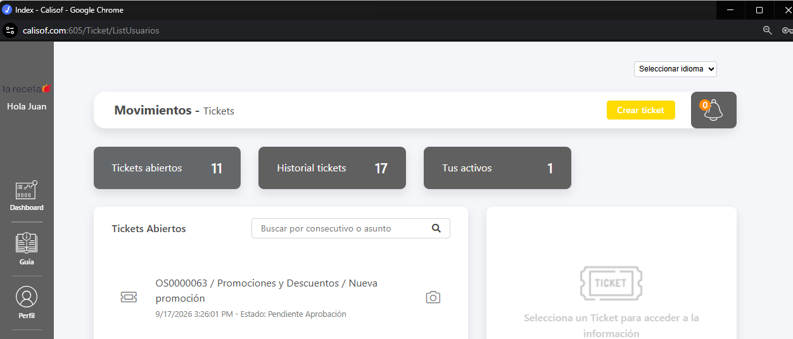
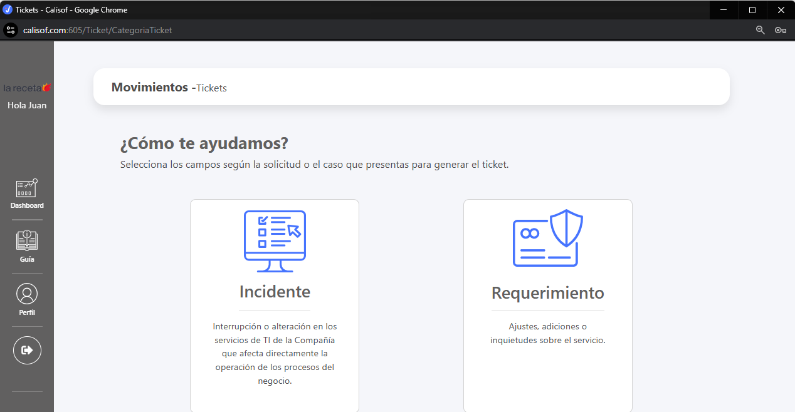
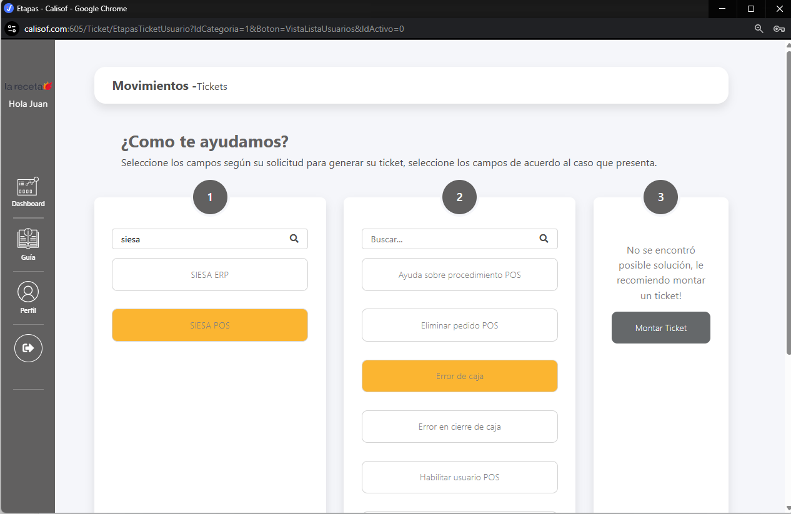
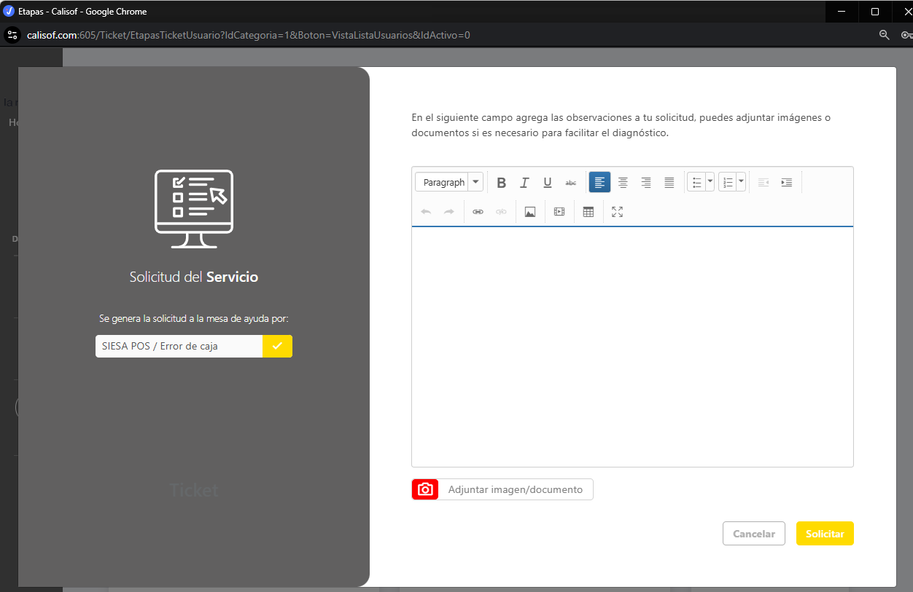

Soporte TI - La Receta
Desde aquí puedes ingresar a Calisof y registrar tus solicitudes de soporte tecnológico. Calisof se abrirá en una ventana independiente para garantizar el correcto funcionamiento del inicio de sesión.
Primero inicia sesión con tu cuenta corporativa de Microsoft 365 y luego abre Calisof.
¿Cómo crear un ticket de soporte?
Sigue estos pasos para registrar correctamente tu solicitud y ayudarnos a atenderla con mayor rapidez.
1Crea el ticket
Después de ingresar a Calisof, haz clic en el botón amarillo Crear ticket ubicado en la parte superior.

2Selecciona Incidente o Requerimiento
Incidente: úsalo cuando algo que debería funcionar presenta una falla o interrupción, por ejemplo un error del POS, una impresora que no funciona o una falla de conexión.
Requerimiento: úsalo cuando necesitas un ajuste, acceso, configuración, instalación, creación o modificación y no necesariamente existe una falla.

3Identifica el servicio y el tipo de problema
Selecciona primero el sistema o servicio relacionado con tu solicitud y después el tipo de problema. Calisof puede mostrar alternativas o ayudas según tu selección. Si necesitas soporte, haz clic en Montar Ticket.

4Describe el problema y envía la solicitud
Describe claramente qué estabas intentando hacer, qué ocurrió y cualquier mensaje de error que aparezca. Si es posible, utiliza Adjuntar imagen/documento para incluir una captura o soporte. Finalmente haz clic en Solicitar.

Después de crear el ticket podrás consultar su estado desde Calisof.